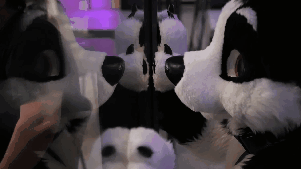

A Shrine to
° 𐐪𐑂 ♡ 𐐪𐑂 Coco the Corgi 𐐪𐑂 ♡ 𐐪𐑂 °
° 𐐪𐑂 ♡ 𐐪𐑂 Coco the Corgi 𐐪𐑂 ♡ 𐐪𐑂 °

Coco is a black and white female corgi dog. She belongs to the performer Wolvinny, who also performs as "Jail", a wolf fursuit.
The fist sketch of Coco was created in 2013, and her suit was "born" in 2016! She's energetic, loves to dance and be active, and most of all, adorable!
Coco's suit was created by the Norwegian maker Templa Creations.
The fist sketch of Coco was created in 2013, and her suit was "born" in 2016! She's energetic, loves to dance and be active, and most of all, adorable!
Coco's suit was created by the Norwegian maker Templa Creations.
Coco in action!
This is Coco performing in the dance competition at Midwest Fur Fest 2018! Look at her cute moves!! I love it when she jumps around.
Coco in "Mai Mai Mai"
Wolvinny says: "In these stressfull times: Don't forget to move your feet! I promise it's a great stress reliever!"
Wolvinny says: "In these stressfull times: Don't forget to move your feet! I promise it's a great stress reliever!"


Wolvinny is a very active suiter-- here are just a few shots of Coco's adventures.
I love how energetic she is!
I love how energetic she is!
My Fan Art of Coco
CLICK FOR CREDITS
All materials you see here came from:
Wolvinny's Twitter Page
Wolvinny's YouTube Channel
Wolvinny's Furaffinity
The Fursuit Gifs Tumblr Page
Anything you see edited on this page was edited by me.
All videos are hosted through Streamable, due to YouTube being blocked on many public and home WiFi networks.
Please support the original creators of all this content!!!!!
Wolvinny's Twitter Page
Wolvinny's YouTube Channel
Wolvinny's Furaffinity
The Fursuit Gifs Tumblr Page
Anything you see edited on this page was edited by me.
All videos are hosted through Streamable, due to YouTube being blocked on many public and home WiFi networks.
Please support the original creators of all this content!!!!!
Back to Shrine Directory